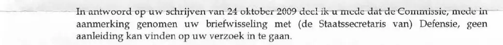

Beweisstück · Brief
CTIVD an Giltay, 27. Oktober 2009
Die Passage
„In Beantwortung Ihres Schreibens vom 24. Oktober 2009 teile ich Ihnen mit, dass die Kommission, auch unter Berücksichtigung Ihres Schriftwechsels mit dem (Staatssekretär im) Verteidigungsministerium, keinen Anlass sehen kann, auf Ihr Ersuchen einzugehen.“ Seite 1, der Brieftext, der aus einem einzigen Absatz besteht. Aus dem Niederländischen übersetzt; der Originaltext steht unten.
Originaltext
“In antwoord op uw schrijven van 24 oktober 2009 deel ik u mede dat de Commissie, mede in aanmerking genomen uw briefwisseling met (de Staatssecretaris van) Defensie, geen aanleiding kan vinden op uw verzoek in te gaan.”

Warum dieses Dokument wichtig ist
In diesem Brief vom 27. Oktober 2009 schreibt der Vorsitzende der CTIVD (Aufsichtskommission für die Nachrichtendienste), A.H. van Delden, an Giltay, dass die Kommission, auch angesichts von Giltays Schriftwechsel mit dem Verteidigungsministerium, „keinen Anlass sehen kann“, auf sein Ersuchen einzugehen. Er war der Nachfolger von I.P. Michiels van Kessenich-Hoogendam, die im Januar desselben Jahres als Vorsitzende an Giltay geschrieben hatte. Auf diesen beiden Briefen aufeinanderfolgender Vorsitzender beruht die Aussage im Essay, dass die CTIVD-Untersuchung, die zweite Säule der Weigerung des Verteidigungsministeriums im Jahr 2017, nicht existierte und dass dies seit 2009 schriftlich dokumentiert war.
Herkunft
- Dokument
- Brief, eine Seite
- Absender
- Commissie van Toezicht betreffende de Inlichtingen- en Veiligheidsdiensten (CTIVD), die Aufsichtskommission für die Nachrichtendienste, Anna van Saksenlaan 50, Den Haag
- Empfänger
- E. Giltay
- Datum
- 27. Oktober 2009
- Geschäftszeichen
- 2009/0212
- Betreff
- „Uw schrijven d.d. 24 oktober 2009“ (Ihr Schreiben vom 24. Oktober 2009)
- Unterzeichnet
- A.H. van Delden, Vorsitzender der CTIVD, mitunterzeichnet von N. Verhoeven, Sekretär der Kommission. Beide Unterschriften sind im Scan geschwärzt
- Bezüge
- Giltays Brief vom 24. Oktober 2009 und sein Schriftwechsel mit dem (Staatssekretär im) Verteidigungsministerium; der frühere Brief der Kommission an Giltay vom 12. Januar 2009, Geschäftszeichen 2009/0008, dedoofpotgeneraal.
nl/ doc/ ctivd1.pdf - Sprache
- Niederländisch
- Quelle
- Scan auf dedoofpotgeneraal.
nl/ doc/ ctivd2.pdf - Siehe auch
- CTIVD an Giltay, 12. Januar 2009Verteidigungsministerium an Giltay, 6. Juni 2017
Zitiert in: dem Essay „Das Verbot fiel, das Buch hielt stand“ in den Kapiteln (3) „Was das Buch enthüllt: die Srebrenica-Vertuschung“ und (7) „Nie eine inhaltliche Antwort“.
Beweiskarte: https://
Dokument: https://
Zuletzt geändert am 13. September 2026, abgerufen am 9. Oktober 2026.

Diese Seite ist ein Beweisstück zum Buch Der Cover-up-General von Edwin Giltay und zur dazugehörigen Website.